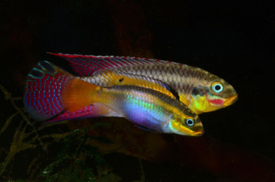

Systématique
- Ordre : Cichliformes
- Famille : Cichlidae
- Genre : Pelvicachromis
- Espèce : P. taeniatus
- Auteur : Boulenger, 1901

Pelvicachromis taeniatus est l'un des cichlidés nains les plus colorés et les plus appréciés d'Afrique de l'Ouest. Souvent confondu par les débutants avec le P. pulcher (Kribensis), il s'en distingue par une forme plus allongée et des patrons de coloration extrêmement variés selon sa localité d'origine (Nigeria Red, Moliwe, Dehane, etc.).
Le mâle atteint environ 8 à 9 cm, tandis que la femelle reste plus petite (6 à 7 cm). Le nom d'espèce taeniatus signifie "orné de bandes", en référence aux motifs qui parcourent son corps. Les couleurs sont spectaculaires : le mâle arbore souvent des nageoires dorsales et caudales ponctuées d'ocelles noirs bordés de jaune ou de rouge, tandis que la femelle présente un abdomen violet/pourpre intense lorsqu'elle est prête à pondre.
C'est un poisson territorial mais relativement paisible en dehors des périodes de reproduction. Il vit en couple monogame. Contrairement à d'autres cichlidés, il ne déracine pas les plantes et respecte généralement le décor de l'aquarium. Il occupe principalement la zone inférieure et médiane du bac.
En aquarium, il nécessite un environnement bien structuré avec de nombreuses cachettes (racines, noix de coco, pots renversés) qui serviront de sites de ponte potentiels. Il apprécie un bac bien planté qui lui offre des zones d'ombre et de sécurité. Une cohabitation avec des poissons de banc paisibles (type Alestidés ou petits Tétras) est recommandée pour le rassurer.
Mode : Ovipare, pondeur sur substrat caché (cavitole).
La reproduction est un moment fascinant : la femelle parade devant le mâle en courbant son corps pour exhiber son ventre coloré. Les œufs (40 à 150) sont déposés au plafond d'une grotte. La femelle assure la garde rapprochée des œufs tandis que le mâle défend vigoureusement le territoire extérieur.
Après l'éclosion, les parents guident les alevins en "nuage" à travers le bac. Les jeunes acceptent immédiatement des nauplies d'artémias. Fait intéressant : chez cette espèce, la température et le pH de l'eau peuvent influencer le sex-ratio de la descendance.
Dimorphisme sexuel : Très marqué. Le mâle est plus grand, avec des nageoires dorsale et anale pointues et souvent plus d'ocelles sur la caudale. La femelle est plus petite, plus ronde, avec des nageoires pelviennes arrondies et un ventre violet/rouge vif très voyant en période de frai.
Espérance de vie : 4 à 6 ans en aquarium.
Originaire du sud du Nigeria et du Cameroun, il fréquente les petits cours d'eau forestiers et les rivières calmes. Son habitat naturel est souvent caractérisé par une eau douce, limpide et légèrement acide, s'écoulant sur un lit de sable jonché de feuilles mortes et de racines.
Le couvert forestier dense limite souvent la lumière directe, créant des zones de pénombre où le poisson se sent en sécurité.
Répartition

Origine naturelle :
- Afrique de l'Ouest : Nigeria (Delta du Niger) et Cameroun.
- Nombreuses formes géographiques distinctes.
Statut UICN : Préoccupation mineure (LC), bien que certaines populations locales puissent être menacées par la dégradation de la forêt tropicale.
Paramètres de maintenance
Température : 24 à 27 °C.
pH : 6,0 à 7,2 (Légèrement acide à neutre).
GH : 5 à 12 °dGH (Eau douce à moyennement dure).
Courant : Faible à modéré.
Volume conseillé : Minimum 80-100 L pour un couple.
Régime alimentaire
Régime : Omnivore à tendance carnivore.
Dans la nature, il fouille le substrat à la recherche de petits invertébrés et de matière organique.
En aquarium, il est peu exigeant et accepte les paillettes et granulés de qualité. Cependant, pour maintenir ses couleurs éclatantes, il est essentiel de varier avec du vivant ou du surgelé (artémias, daphnies, vers de vase).